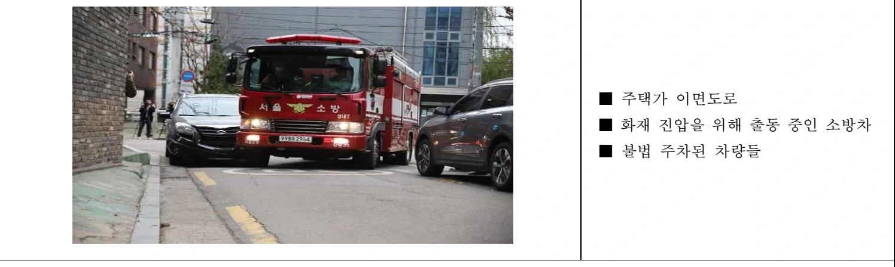

767. Hai giải thích nào không đúng về xử lý cưỡng chế đối với xe gây cản trở xe cứu hỏa đang đi làm nhiệm vụ khẩn cấp?

- ①Có thể di chuyển các xe đang đỗ trái phép gây cản trở hoạt động chữa cháy.
- ②Có thể dẹp bỏ các xe đang đỗ trong đường phân chia khu vực đỗ xe gây cản trở hoạt động chữa cháy.
- ③Có thể di chuyển hoặc dẹp bỏ các đồ vật gây cản trở lưu thông của xe cứu hỏa.
- ④Người điều khiển xe đang đỗ trái phép bị xử lý cưỡng chế có thể yêu cầu bồi thường thiệt hại.
- ⑤Người điều khiển xe đang đỗ trong đường phân chia khu đỗ xe bị xử lý cưỡng chế có thể yêu cầu bồi thường thiệt hại.
Xem đáp án
Đáp án
④ Người điều khiển xe đang đỗ trái phép bị xử lý cưỡng chế có thể yêu cầu bồi thường thiệt hại.
⑤ Người điều khiển xe đang đỗ trong đường phân chia khu đỗ xe bị xử lý cưỡng chế có thể yêu cầu bồi thường thiệt hại.
Căn cứ
Điều 25 của Đạo luật khung về dịch vụ chữa cháy (Bắt buộc, v.v.) ② Khi người đứng đầu sở cứu hỏa, người đứng đầu sở cứu hỏa hoặc người đứng đầu sở cứu hỏa thấy cần khẩn cấp để cứu người hoặc ngăn chặn đám cháy lan rộng, người đó có thể thực hiện các biện pháp theo khoản (1) đối với các vật thể và đất chữa cháy không phải là vật thể hoặc đất chữa cháy theo khoản (1). ③ Khi người đứng đầu lực lượng cứu hỏa, người đứng đầu lực lượng cứu hỏa hoặc người đứng đầu lực lượng cứu hỏa được điều động khẩn cấp để thực hiện hoạt động chữa cháy, người đó có thể loại bỏ hoặc di chuyển các phương tiện đang đỗ hoặc đang dừng và các đồ vật cản trở việc đi lại của xe cứu hỏa và hoạt động chữa cháy. ④ Người đứng đầu sở cứu hỏa, trưởng phòng cứu hỏa hoặc đội cứu hỏa có thể yêu cầu hỗ trợ kéo phương tiện và nhân lực từ các tổ chức liên quan, chẳng hạn như chính quyền địa phương có thẩm quyền, để loại bỏ hoặc di chuyển các phương tiện đang đỗ hoặc dừng gây cản trở hoạt động chữa cháy theo khoản 3, và người đứng đầu tổ chức liên quan khi nhận được yêu cầu sẽ hợp tác trừ khi có lý do chính đáng. ⑤ Thống đốc tỉnh/thành phố có thể thanh toán chi phí cho những người cung cấp phương tiện kéo, nhân lực, v.v. theo khoản 4, theo quy định của pháp lệnh tỉnh/thành phố. Điều 49-2 (Bồi thường tổn thất) Đoạn 1 3. Người bị thiệt hại do bị xử lý theo Điều 25 Đoạn 2 hoặc Đoạn 3. Tuy nhiên, trong các trường hợp thuộc khoản 3, không bồi thường khi đã vi phạm pháp luật gây cản trở xe chữa cháy hoặc hoạt động chữa cháy.
Phần căn cứ là bản dịch máy để tham khảo.